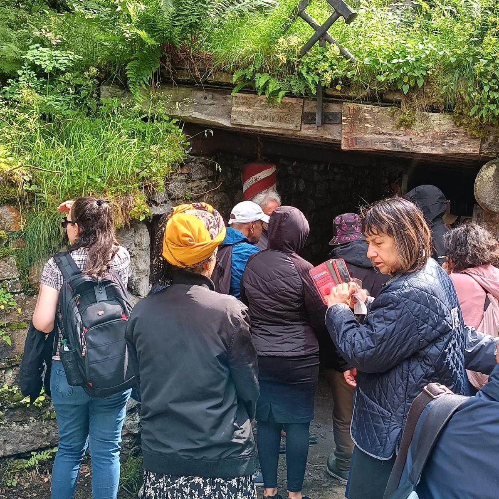
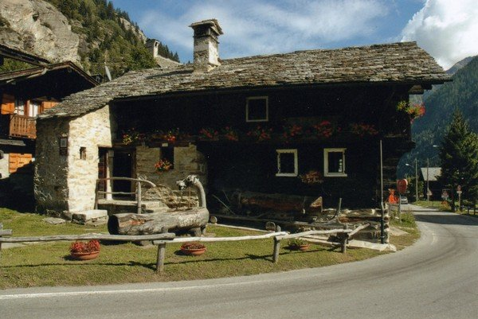
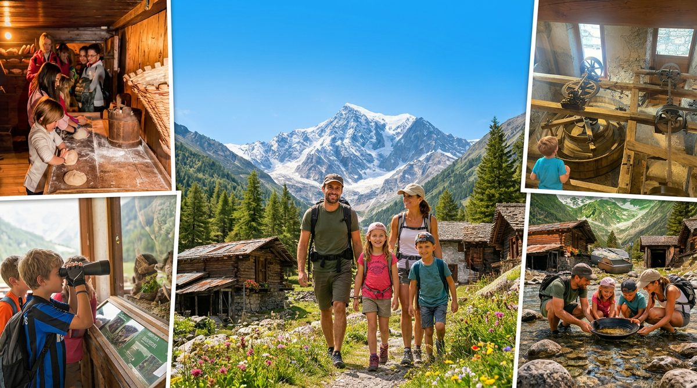
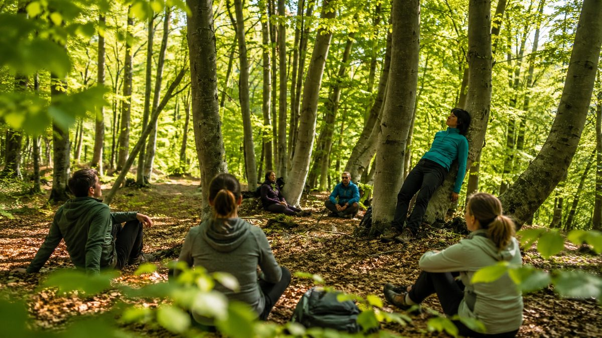
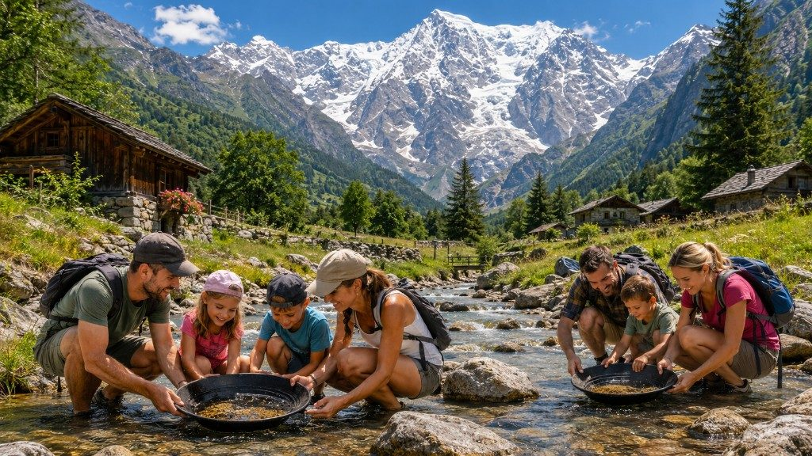
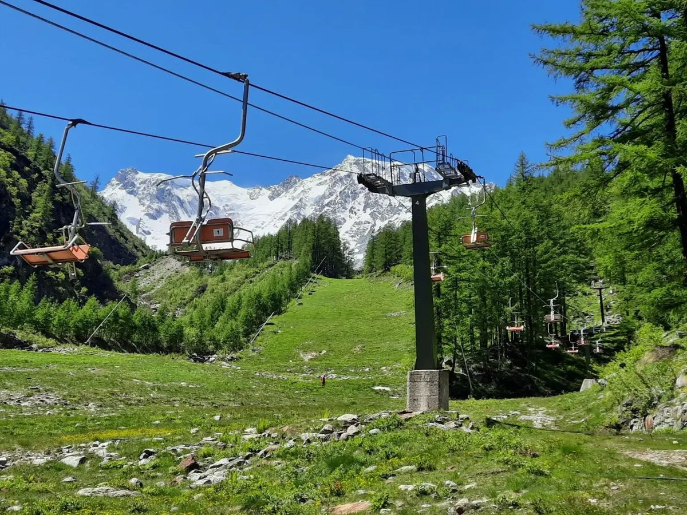
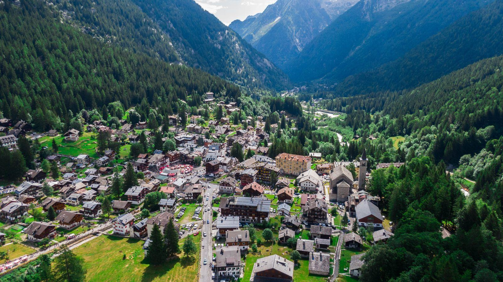

Estate
Aria fresca, passeggiate, benessere, miniere e vita di paese. Ideale per famiglie e chi cerca refrigerio dalla città.

Mountain Experience Portale di prenotazione
Monterosa Macugnaga: la montagna per tutta la famiglia
Gite in montagna, esperienze a contatto con la natura, benessere, miniera d’oro e Casa Walser — estate, autunno e inverno ai piedi del Monte Rosa.
Dove si trova
Nella Valle Anzasca (VB), ai piedi della spettacolare parete Est del Monte Rosa: un villaggio alpino autentico, tra i paesi più belli delle Alpi (Bandiera Arancione del Touring Club Italiano) — ideale per gite in montagna e weekend dalla Pianura Padana e dalla Svizzera.
A portata di strada da Milano, Varese, Novara, e anche da Torino, Genova, Canton Vallese e Ticino. Perfetta per una fuga dalla città, idee weekend in montagna, una settimana rigenerante o un soggiorno lungo in tranquillità.
Prenota online
Il portale di prenotazione ti aiuta ad arricchire la vacanza con esperienze autentiche, gestite da operatori autorizzati. La montagna vera la trovi solo qui.
Cosa vivere
Dal paese, dai sentieri e dai boschi: escursioni, benessere e scoperte culturali a Macugnaga, a passo lento e in sicurezza — anche con i bambini.

Passeggiate e forest bathing per ritrovare respiro e quiete.

La prima miniera d’oro sotterranea visitabile in Italia.

Prenota online la visita: storia walser in una casa del Seicento.

Percorsi facili, sicurezza e divertimento per tutta la famiglia.

Sentieri per tutti i livelli, dalla passeggiata all’escursione.

Un’avventura autentica tra storia mineraria e natura.

Belvedere, Burki e Monte Moro: panorami in quota (verifica aperture ufficiali).
Quattro stagioni
Clima estivo che regala respiro e benessere, colori dell’autunno, magia dell’inverno: Macugnaga accoglie in ogni stagione.
Aria fresca, passeggiate, benessere, miniere e vita di paese. Ideale per famiglie e chi cerca refrigerio dalla città.
Boschi dorati, silenzi, sapori locali e percorsi immersivi tra natura e tradizioni walser.
Neve, atmosfera di villaggio, impianti di risalita e ospitalità alpina per weekend e vacanze.

Weekend con pernottamento
Ammira alba e tramonto, rilassati in hotel, B&B o casa vacanza, assaggia la cucina locale e arricchisci i giorni con escursioni, benessere, Casa Walser e miniera d’oro.
Per chi
Montagne per famiglie, senior, coppie e chi cerca una gita fuori città: ogni pubblico trova il proprio ritmo a Macugnaga.